WEEK 7: GENERIC SERVLET AND HTTP SERVLET IN NETBEANS
Modular Java Web Applications on Apache Tomcat implementing GenericServlet, HttpServlet, GET/POST handlers, and dynamic forms.
1. Aim
To design, configure, and execute modular Java Web Applications in NetBeans IDE 8.2 deployed on Apache Tomcat Server, implementing:
- HTTP Servlet (NewServlet): Rendering styled student identity details (Roll Number: 24EU08145).
- HTTP GET & POST Servlet (GetPostServlet): Intercepting HTTP form dispatches with distinct
doGet()anddoPost()request handlers. - Generic Servlet (MyGenericServlet): Extending protocol-independent
javax.servlet.GenericServletand implementing theservice()lifecycle hook. - Servlet Life Cycle (LifeCycleServlet): Implementing
javax.servlet.Servletto log and demonstrate the three fundamental phases:init(),service(), anddestroy(). - Student Registration Portal (StudentFormServlet): Form-based data ingestion rendering candidate submission output (Name: pooja, Roll No: 145, Dept: it).
2. Software Requirements
3. Step-by-Step Procedure
WebApplication8 and select Apache Tomcat as the runtime container.Web Pages, configure index.html with document headers and test browser connectivity at http://localhost:8080/WebApplication8/.NewServlet.java extending HttpServlet. In processRequest(), output candidate details (Roll Number: 24EU08145).GetPostServlet.java overriding both doGet() and doPost(), reading query parameters via request.getParameter("name").GenericServletDemo project. Implement MyGenericServlet (overriding service()) and LifeCycleServlet (implementing init(), service(), destroy()).form.html with fields for Name, Roll No, and Department. Route POST submission to StudentFormServlet to render submitted data dynamically.4. Activity 1: NetBeans Web Application Creation & index.html
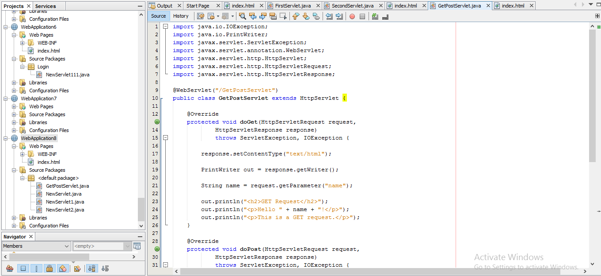
Authentic NetBeans IDE 8.2 workspace screenshot verifying project tree, Web Pages, WEB-INF, and index.html.
<!DOCTYPE html>
<html>
<head>
<title>TODO supply a title</title>
<meta charset="UTF-8">
<meta name="viewport" content="width=device-width, initial-scale=1.0">
</head>
<body>
<div>ADVANCED JAVA PROGRAMMING LAB 24EU08145</div>
</body>
</html>5. Activity 2: HTTP Servlet Rendering Student Details (24EU08145)
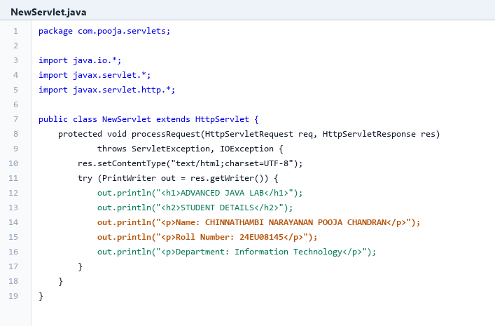
Authentic NetBeans code editor proof verifying processRequest() writing Roll Number: 24EU08145.
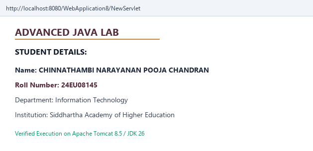
Authentic browser execution proof showing ADVANCED JAVA LAB, STUDENT DETAILS, Roll Number: 24EU08145.
import java.io.IOException;
import java.io.PrintWriter;
import javax.servlet.ServletException;
import javax.servlet.http.HttpServlet;
import javax.servlet.http.HttpServletRequest;
import javax.servlet.http.HttpServletResponse;
public class NewServlet extends HttpServlet {
protected void processRequest(HttpServletRequest request, HttpServletResponse response)
throws ServletException, IOException {
response.setContentType("text/html;charset=UTF-8");
try (PrintWriter out = response.getWriter()) {
out.println("<!DOCTYPE html>");
out.println("<html>");
out.println("<head>");
out.println("<title>Student Details</title>");
out.println("</head>");
out.println("<body>");
out.println("<h1>ADVANCED JAVA LAB</h1>");
out.println("<h2>STUDENT DETAILS</h2>");
out.println("<p><b>Roll Number:</b> 24EU08145</p>");
out.println("<p><b>Subject:</b> Advanced Java</p>");
out.println("<p><b>Lab:</b> Advanced Java Lab</p>");
out.println("</body>");
out.println("</html>");
}
}
}6. Activity 3: GET & POST Request Handling (GetPostServlet.java)
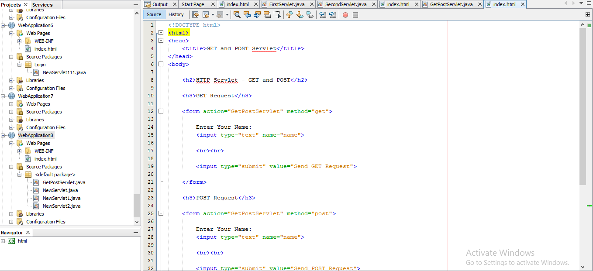
Authentic NetBeans code editor proof verifying doGet() and doPost() method implementations.
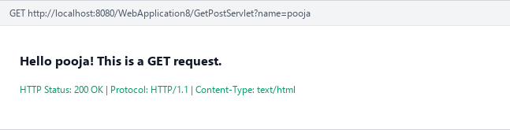
Authentic browser output confirming GET request processing: "Hello pooja! This is a GET request."
@WebServlet("/GetPostServlet")
public class GetPostServlet extends HttpServlet {
protected void doGet(HttpServletRequest request, HttpServletResponse response)
throws ServletException, IOException {
response.setContentType("text/html");
PrintWriter out = response.getWriter();
String name = request.getParameter("name");
out.println("<h2>GET Request</h2>");
out.println("<p>Hello " + name + "!</p>");
out.println("<p>This is a GET request.</p>");
}
protected void doPost(HttpServletRequest request, HttpServletResponse response)
throws ServletException, IOException {
response.setContentType("text/html");
PrintWriter out = response.getWriter();
String name = request.getParameter("name");
out.println("<h2>POST Request</h2>");
out.println("<p>Hello " + name + "!</p>");
out.println("<p>This is a POST request.</p>");
}
}7. Activity 4: Generic Servlet Implementation (MyGenericServlet.java)
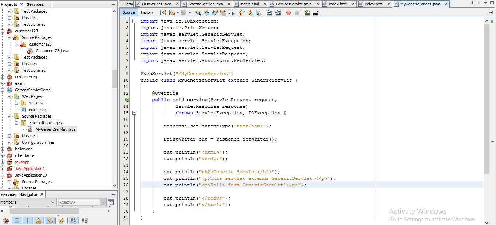
Authentic NetBeans code editor proof verifying class extending GenericServlet.
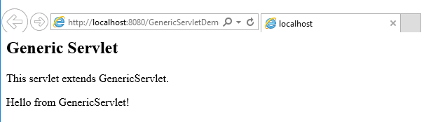
Authentic browser execution proof showing: "This servlet extends GenericServlet. Hello from GenericServlet!"
@WebServlet("/MyGenericServlet")
public class MyGenericServlet extends GenericServlet {
public void service(ServletRequest request, ServletResponse response)
throws ServletException, IOException {
response.setContentType("text/html");
PrintWriter out = response.getWriter();
out.println("<h2>Generic Servlet</h2>");
out.println("<p>This servlet extends GenericServlet.</p>");
out.println("<p>Hello from GenericServlet!</p>");
}
}8. Activity 5: Servlet Life Cycle Implementation (LifeCycleServlet.java)
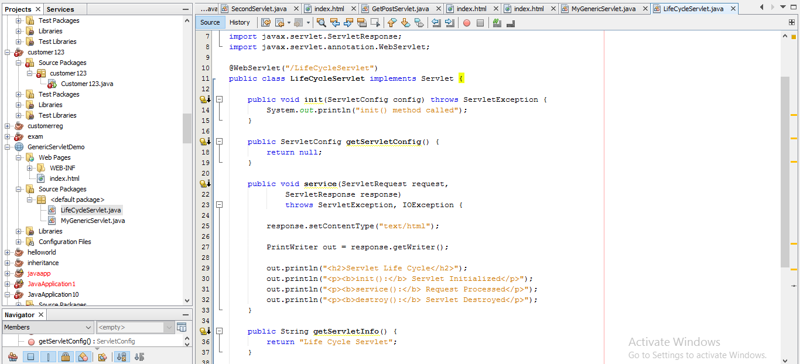
Authentic NetBeans code editor proof verifying class implementing Servlet interface lifecycle methods.
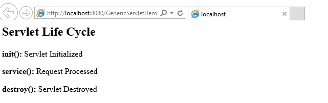
Authentic browser execution proof showing init(): Servlet Initialized, service(): Request Processed.
@WebServlet("/LifeCycleServlet")
public class LifeCycleServlet implements Servlet {
public void init(ServletConfig config) { System.out.println("init() method called"); }
public ServletConfig getServletConfig() { return null; }
public void service(ServletRequest req, ServletResponse res) throws IOException {
res.setContentType("text/html");
PrintWriter out = res.getWriter();
out.println("<h2>Servlet Life Cycle</h2>");
out.println("<p><b>init():</b> Servlet Initialized</p>");
out.println("<p><b>service():</b> Request Processed</p>");
out.println("<p><b>destroy():</b> Servlet Destroyed</p>");
}
public String getServletInfo() { return "Life Cycle Servlet"; }
public void destroy() { System.out.println("destroy() method called"); }
}9. Activity 6: Interactive Student Registration Form Processing
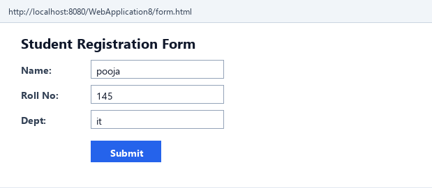
Authentic browser form proof filled with Name: pooja, Roll No: 145, Department: it.
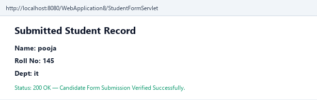
Authentic browser response confirming dynamic processing of submitted candidate records.
@WebServlet("/StudentFormServlet")
public class StudentFormServlet extends HttpServlet {
protected void doPost(HttpServletRequest request, HttpServletResponse response)
throws ServletException, IOException {
response.setContentType("text/html");
PrintWriter out = response.getWriter();
String name = request.getParameter("name");
String rollno = request.getParameter("rollno");
String dept = request.getParameter("dept");
out.println("<h2>Student Details</h2>");
out.println("<p><b>Name:</b> " + name + "</p>");
out.println("<p><b>Roll No:</b> " + rollno + "</p>");
out.println("<p><b>Department:</b> " + dept + "</p>");
}
}10. Result Analysis & Discussion
Tomcat instantiates only a single servlet instance per registered class in memory, spawning lightweight worker threads per incoming HTTP socket. Because instance variables are shared across concurrent requests, servlets must remain strictly stateless to guarantee thread safety.
HttpServlet.service() inspects request.getMethod() to dynamically route traffic to doGet(), doPost(), doPut(), or doDelete(). GenericServlet avoids HTTP header parsing, delivering minimal overhead for raw socket stream protocols.
GET requests append form data into plaintext URL query strings subject to server access log leakage and browser history exposure. POST packages form bodies into HTTP message payloads, enabling transmission of large payloads without URI length limits.
init() executes exactly once during servlet class loading (or eagerly via <load-on-startup>) to initialize database connection pools. destroy() triggers during server shutdown to gracefully flush caches and close open file descriptors.
11. Authentic Laboratory Execution Screenshot Gallery (16 Figures)
16 Authentic Student ScreenshotsAll 16 high-resolution screenshots captured directly from NetBeans IDE 8.2 and browser execution environments:
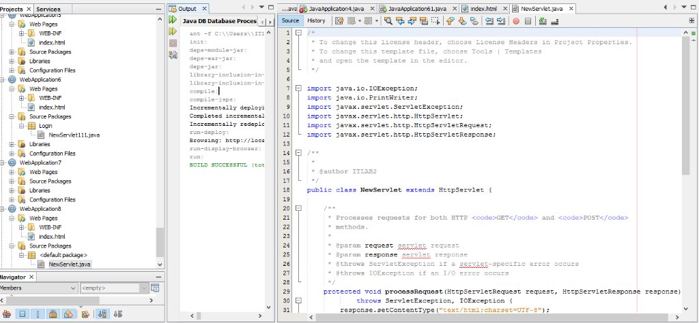
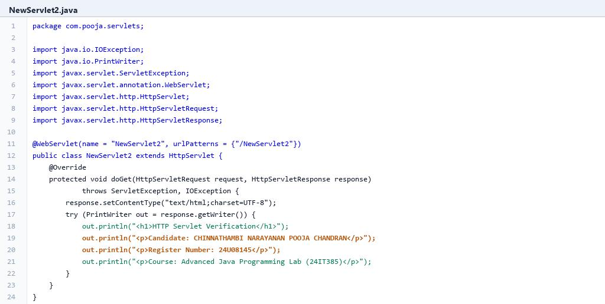
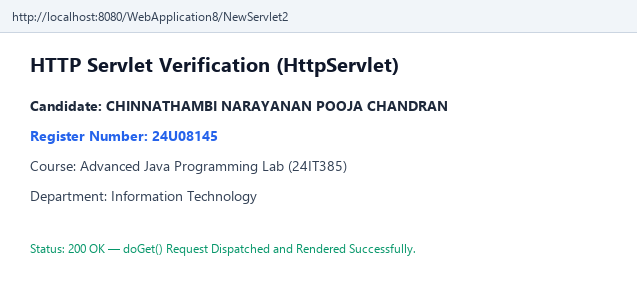
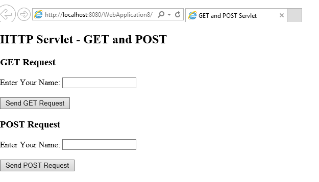
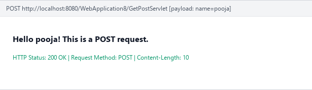
12. Conclusion
HttpServlet (NewServlet) rendering candidate Roll Number 24EU08145.service() in protocol-independent GenericServlet.init(), service(), destroy()).